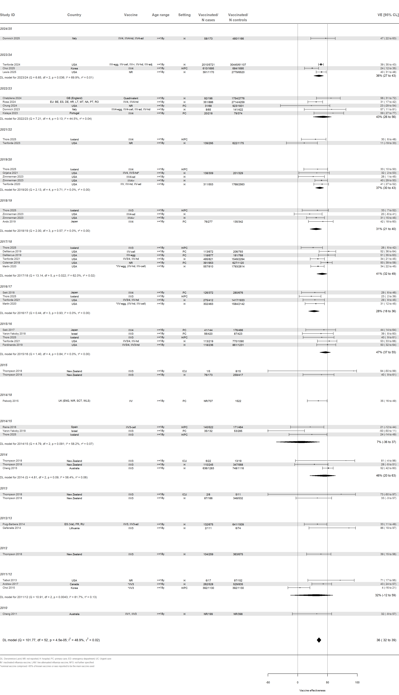

8 All adults aged 15 years and older
Estimates made for age groups aged ≥15 yearsFigure 8.1: VE estimates against any influenza (A and B), adults ≥15y
| Group | No. estimates | Summary estimate | I^2 | Cochran’s Q | tau^2 | p |
|---|---|---|---|---|---|---|
| 2010 | 1 | Too few to estimate | - | - | - | - |
| 2011/12 | 3 | 32% (-12 to 59) | 81.7 | 10.91 | 0.131 | 0.004 |
| 2012 | 1 | Too few to estimate | - | - | - | - |
| 2012/13 | 2 | Too few to estimate | - | - | - | - |
| 2013 | 2 | Too few to estimate | - | - | - | - |
| 2014 | 3 | 46% (20 to 63) | 58.4 | 4.81 | 0.062 | 0.090 |
| 2014/15 | 3 | 7% (-36 to 37) | 58.2 | 4.79 | 0.066 | 0.091 |
| 2014/18 | 1 | Too few to estimate | - | - | - | - |
| 2015 | 2 | Too few to estimate | - | - | - | - |
| 2015/16 | 5 | 47% (37 to 55) | 0.0 | 1.40 | 0.000 | 0.844 |
| 2016/17 | 4 | 28% (18 to 36) | 0.0 | 0.44 | 0.000 | 0.933 |
| 2017/18 | 6 | 41% (32 to 49) | 62.0 | 13.14 | 0.019 | 0.022 |
| 2018/19 | 4 | 31% (21 to 40) | 0.0 | 2.00 | 0.000 | 0.573 |
| 2019/20 | 5 | 37% (30 to 43) | 0.0 | 2.13 | 0.000 | 0.711 |
| 2021/22 | 2 | Too few to estimate | - | - | - | - |
| 2022/23 | 5 | 43% (26 to 56) | 44.5 | 7.21 | 0.038 | 0.125 |
| 2023/24 | 3 | 36% (27 to 43) | 69.9 | 6.65 | 0.008 | 0.036 |
| 2024/25 | 1 | Too few to estimate | - | - | - | - |